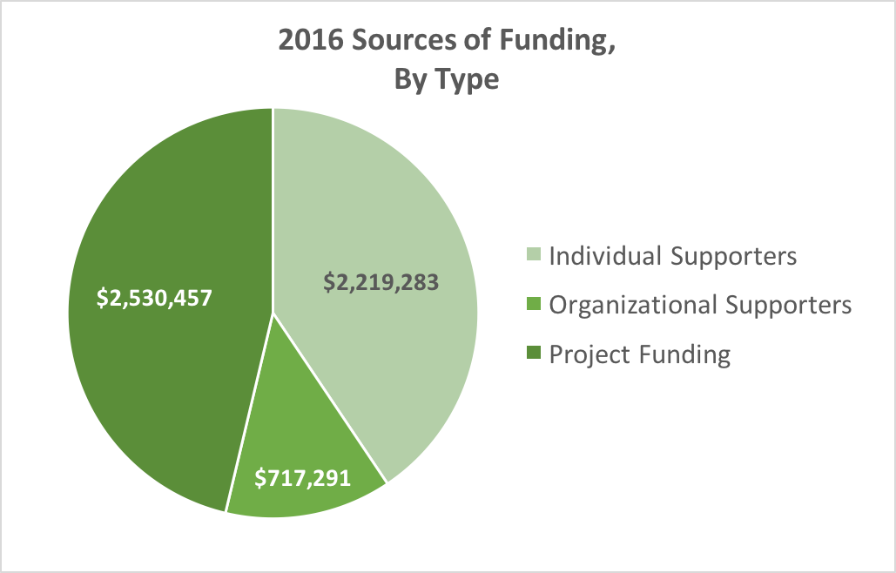
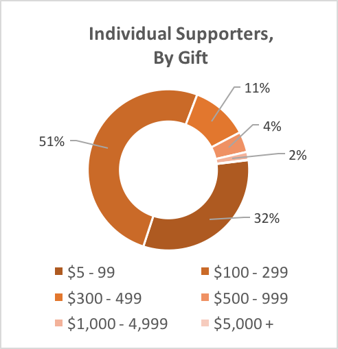
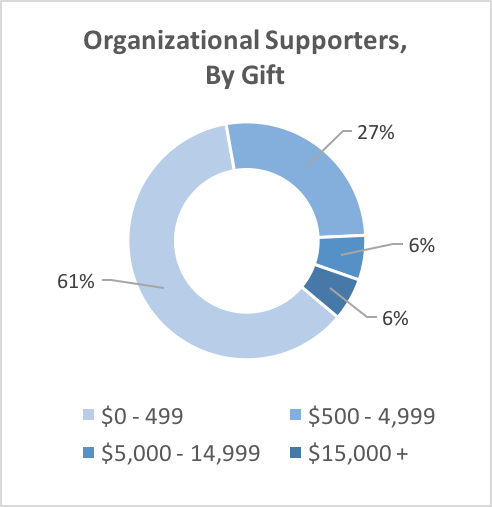
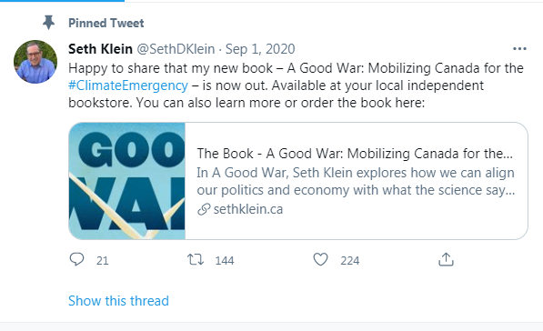

CCPA: Funding Sources
March 19th, 2021
Previously when writing about the CCPA, I mentioned that they had quite the interesting breakdown of funding. Well, from their page on funding.
CCPA Funding:
TDC_ARTICLE_START
The Canadian Centre for Policy Alternatives (CCPA) is a registered non-profit charity. We depend on thousands of individual supporters across Canada, as well as academic/research grants and project-based funding, and support from a broad spectrum of civil society organizations representing millions of Canadians.
TDC_ARTICLE_STOP

Hmmm. Interesting. They get approximately five and a half million dollars per year for budget. That's quite a lot of money, considering that they don't appear to actually have much in the way of expenses.
TDC_ARTICLE_START
For more than 30 years, CCPA supporters have been helping to build the strongest and most influential progressive think tank in Canada. We are deeply grateful for the generous contributions of 11,242 individual supporters across Canada in 2016. Their support allows us to take on important research initiatives at the national, international, provincial and municipal levels. It also allows us to make our research available free online, so that anyone can access the strong evidence and arguments we make for social change.

The CCPA receives support from a broad spectrum of civil society organizations representing millions of Canadians. In 2016, we were fortunate to receive contributions from 328 organizational supporters. This generous support enables us to devote significant resources to producing original, independent research, to busting myths and balancing public debate, and to promoting practical and progressive policy solutions that show that we can afford to build a more just and sustainable Canada—and that our economy will be stronger for it.
Click here for a list of organizational supporters who have contributed to the CCPA in amounts over $15,000.
TDC_ARTICLE_STOP

You'll notice, goy, that they give you the number of donations in a certain range. However, they won't give you total amount of donations, in dollars, for that range. To explain what the difference is:
Imagine they received 1 $5.00 donation, and 1 $500,000.00 donation. They could list this as having equal amounts of donations big and small, but the big money donation accounts for 99.99% of their actual money received. It's not super important, but it's a sleight of hand worth keeping in mind.
Following up on this, I did in fact take a look at who their big money donors were, which they handily provided.
CCPA Org Support:
TDC_ARTICLE_START
BC Federation of Labour
BC Government & Service Employees' Union
British Columbia Teachers' Federation
Canadian Association of University Teachers
Canadian Labour Congress
Canadian Union of Public Employees
Canadian Union of Public Employees (BC Division)
Eden Conservation Trust
Health Sciences Association of BC
Hospital Employees Union
Manitoba Government Employees' Union
Manitoba Teachers' Society
Nova Scotia Government Employees’ Union
National Union of Public and General Employees
Public Service Alliance of Canada
Saskatchewan Government Employees Union
United Food and Commercial Workers
Unifor
United Steel Workers
TDC_ARTICLE_STOP
It's basically a long list of unions, mostly public sector, along with some federations thrown in there. I highly doubt that the United Steel Workers, the actual workers, not the union employees, would vote to give their money to this anti-White institute, but that would be real democracy, so rest assured, it'll never happen.
Finally, I popped on over to the Projects and Initiatives Page to see what they were up to. After all, 5.5 million dollar budget can sure buy you a lot. I'm only going to be giving their expanded synopsis for
Projects:
TDC_ARTICLE_START
Alternative Federal Budget
Climate Justice Project
An initiative of our BC Office, this project looks at climate change from a social justice perspective, asking how we can tackle global warming with fairness and equality. It is a partnership between the CCPA, the University of British Columbia, a multi-disciplinary team of academics from three BC universities, and more than 40 trade unions, environmental organizations, First Nations, social justice groups, and other research institutes. Find out more here.
Economic Security Project
Education Project
Good Economy Project
The Growing Gap
Labour Matters
Making Women Count
Making Women Count measures the size of Canada's gender gap and offers solutions to the inequalities that persist between women and men in Canada. Closing the gender gap in Canada will provide a significant engine for long-term economic growth, as well as an immediate increase in the social and economic well-being of women and girls in Canada. Find out more here.
Manitoba Research Alliance
Public Interest Research Project
Resource Economics Project
Seniors Care Project
Think Upstream
Trade and Investment Research Project
TDC_ARTICLE_STOP

It's honestly fairly boring. So boring in fact, that I'm just flat out not going to continue doing coverage of this sort of thing. We have "try to be less White," explicitly pushed by (((Robin Deangelo))), and we have fathers being throw in jail for referring to their daughters as "she". High class anti-Whiteness and general POZ isn't at all useful to me.